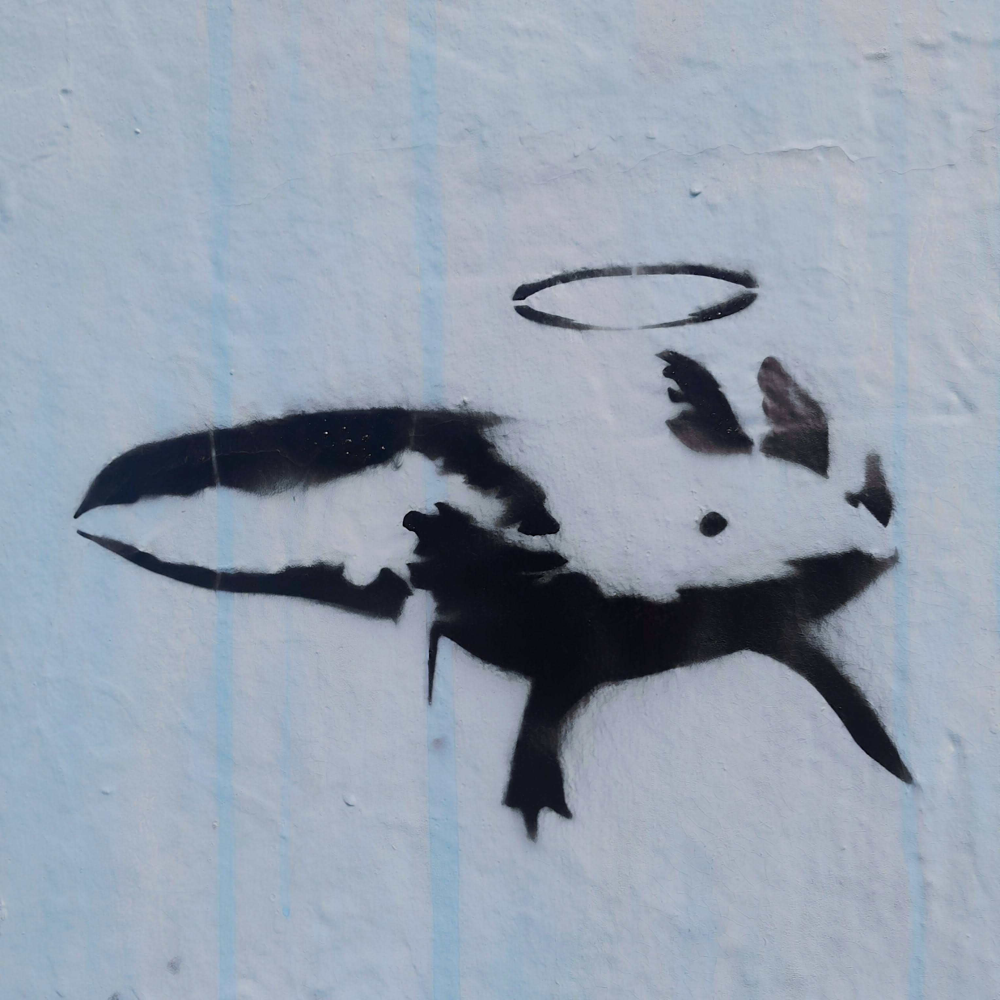
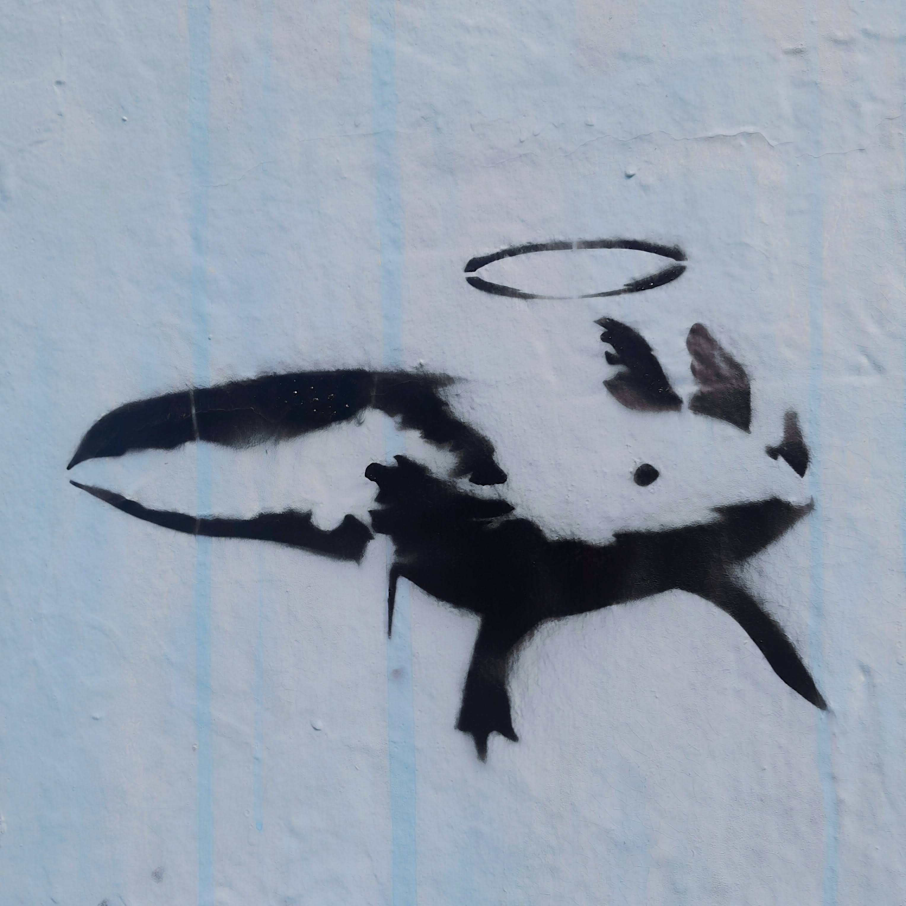
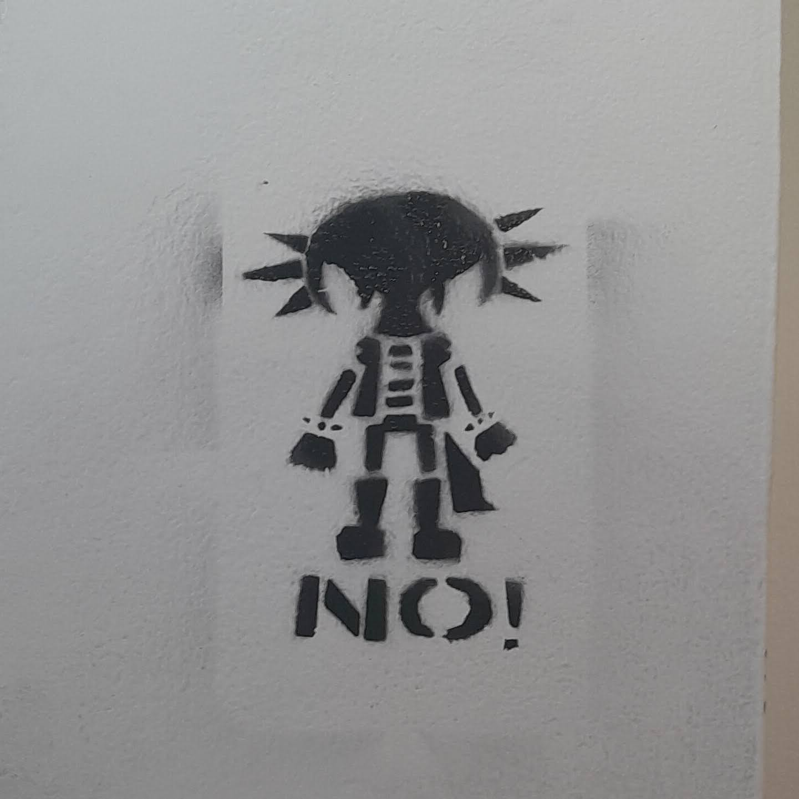
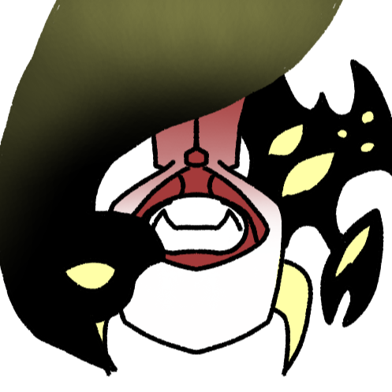
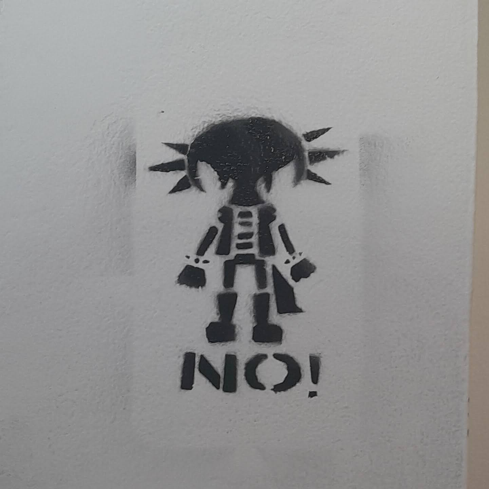
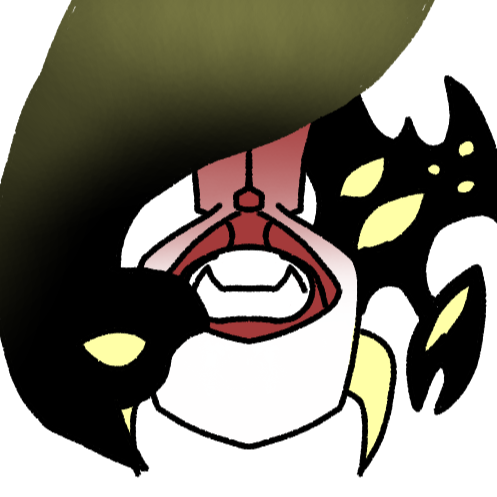
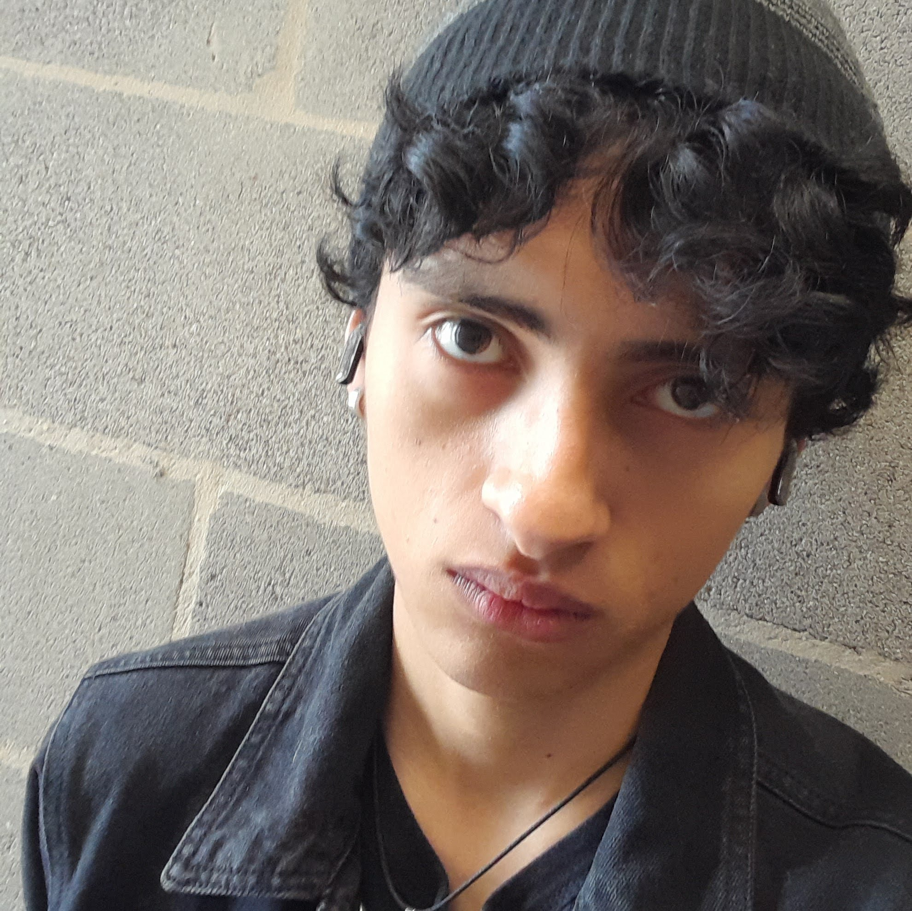
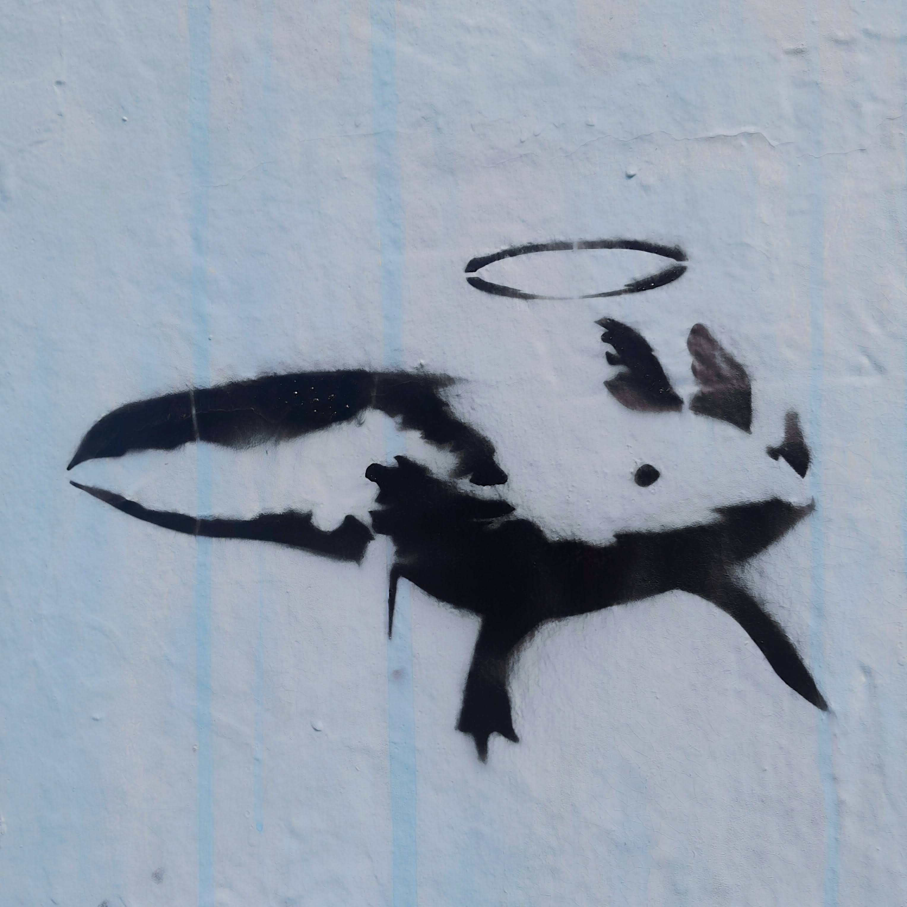
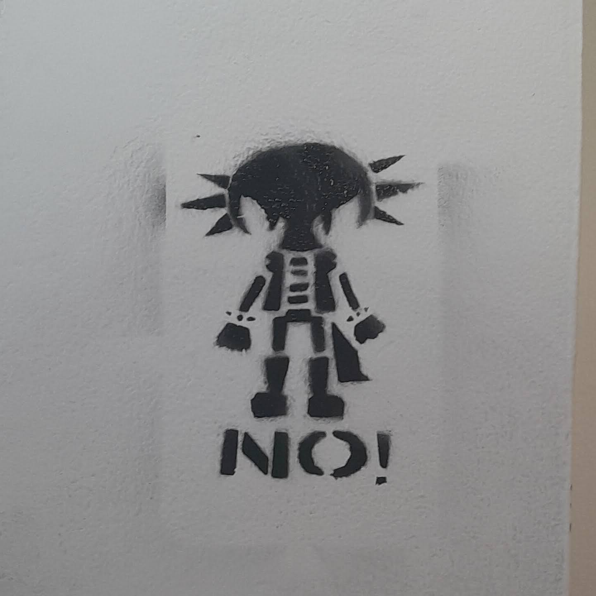
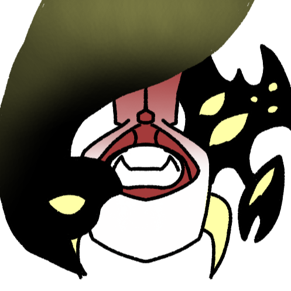

 



Diseñador gráfico
Músico independiente
Arte digital y urbano
Cornista sinfónico
Soltero
Incapaz de dejar de crear desde 2007, JuanFe es un rolo que trabaja en una enorme variedad de proyectos creativos por la pura necesidad de hacerlo, abarcando animaciones, comics, proyectos musicales, videojuegos y más.



